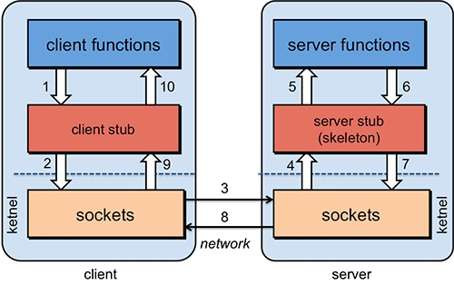

2018-1-13分布式初探
把最近看的分布式的概念整合在一起，小白学习文。
单机、集群、分布式
单系统是应用程序、数据库、文件等资源都在同一台服务器上，例如LAMP系统，(Linux,Apache,MySQL,PHP)
分布式相当于一个业务分拆多个子业务，部署在不同的服务器上。
集群则是同一个业务，部署在多个服务器上。
网站的发展可以引入以下例子,为hsf(rpc框架,淘宝)毕玄写的。
"一家小超市，一个收银员，同时兼着干着其他的事情，例如打扫、摆货。
忙的时候收银员根本没有时间去打扫卫生，超市内有点脏，顾客受不了，于是增加了一个收银台，雇了一个收银员。
随着顾客的增加，超市也经历过好几次的装修，由以前的一层变成俩层，这个时候做的事情就是不断的增加收银台，收银员和打扫卫生的人。
在超市运转的过程中，老板发现一个现象，有些收银台排很长的队，有些收银台排的人不多，了解后知道是因为收银台太多了，顾客根本就看不到现在各个收银台的状况。对于这个现象，一种简单的方法就是继续加收银台。但一方面，超市没地方可加收银台了，作为老板，当然不需要雇太多的人，于是开始研究怎么让顾客了解到收银台的状况，简单地加了一个摄像头和大屏幕，大屏幕上显示目前收银台的状况，这样基本解决了这个问题。
排队长度差不多后，又出现了一个现象，就是有些收银速度明显比其他的慢，原因是排在这些收银的顾客买的东西特别的多，于是又想了一招，就是设立专门10件以下的通道，这样买东西比较少的顾客就不用排太长的队了，这一招施展之后，顾客的满意度明显上升，销售额也好了不少，后来就继续用这招应对团购状况、VIP状况。
在解决了上面的一些烦心事后，老板关注到了一个存在已久的现象，就是白天收银员很闲，晚上则很忙，于是从节省成本上考虑，决定实行部分元功能跟只在晚上上班的机制，白天则关闭一些收银台，顾客仍然可以通过大屏幕看到那些收银台是关闭的，避免走到没人的收银台去，实行这招之后，成本大大的降低了。"
rpc和注册中心
rpc框架:
rpc是指远程过程调用，也就是说AB服务器，A中的应用调用B中的方法，主要是通过网络来传达调用和发送数据。
第一步:通讯问题，主要是在客户端和服务器间建立TCP连接(经历3次握手)，连接按需连接，也可以是长连接，多个远程调用共享同一个连接。
第二步:寻址问题，B中的方法参数以及服务器的IP地址和特定端口，需要暴露给A,这样A才能调用。
第三步:数据问题，网络上传递数据是基于二进制的，A内存中的参数的值需要序列化成二进制的格式，通过寻址和传输将序列化的二进制发送给B。
第四步:B收到请求后，需要对传来的参数进行反序列话的操作(序列化的逆操作)，恢复为内存中表达方式，然后找到对应的放进进行B服务器中的本地调用，得到返回值。
第五步:返回值发送回A服务器，通过序列化的发送，A接收到信息之后，进行进行反序列化，恢复内存中的方式，交给A应用。

(图片来源:https://www.cs.rutgers.edu/~pxk/417/notes/03-rpc.html)
rpc与socket区别
https://www.cnblogs.com/leenuxqt/p/3202527.html
注册中心:
分布式网络的三个基本特性:一致性(consistency)、可用性(Availability)、分区容错(partition-tolerance)，即CAP。
CAP定律说的是在一个分布式计算机系统中，一致性，可用性和分区容错性这三种保证无法同时得到满足，最多满足两个。
eureka保证AP
Eureka各个节点都是平等的，几个节点挂掉不会影响正常节点的工作，剩余的节点依然可以提供注册和查询服务。而Eureka的客户端在向某个Eureka注册或时如果发现连接失败，则会自动切换至其它节点，只要有一台Eureka还在，就能保证注册服务可用(保证可用性)，只不过查到的信息可能不是最新的(不保证强一致性)。除此之外，Eureka还有一种自我保护机制，如果在15分钟内超过85%的节点都没有正常的心跳，那么Eureka就认为客户端与注册中心出现了网络故障，此时会出现以下几种情况：
1. Eureka不再从注册列表中移除因为长时间没收到心跳而应该过期的服务
2. Eureka仍然能够接受新服务的注册和查询请求，但是不会被同步到其它节点上(即保证当前节点依然可用)
3. 当网络稳定时，当前实例新的注册信息会被同步到其它节点中
zookeeper保证CP
当向注册中心查询服务列表时，我们可以容忍注册中心返回的是几分钟以前的注册信息，但不能接受服务直接down掉不可用。也就是说，服务注册功能对可用性的要求要高于一致性。但是zk会出现这样一种情况，当master节点因为网络故障与其他节点失去联系时，剩余节点会重新进行leader选举。问题在于，选举leader的时间太长，30 ~ 120s, 且选举期间整个zk集群都是不可用的，这就导致在选举期间注册服务瘫痪。在云部署的环境下，因网络问题使得zk集群失去master节点是较大概率会发生的事，虽然服务能够最终恢复，但是漫长的选举时间导致的注册长期不可用是不能容忍的。
hadoop家族
(学习路线:http://blog.csdn.net/it_man/article/details/14899905)
服务治理
服务的发布/订阅功能，管理所有服务。(http://blog.csdn.net/suifeng3051/article/details/53992560)
负载均衡
(http://blog.csdn.net/mengdonghui123456/article/details/53981976)
soa与中间件
SOA(面向服务的架构)是一种软件系统提供功能的架构式样。组成这样的一个架构，需要有服务的请求者、服务的提供者、以及服务的描述者，其中，服务的请求者、提供者要遵循相同的规范和标准，才能实现基于互联网的调用，描述者则要把这些服务描述清楚，使请求者能够了解服务是做什么的、到那里去找，如何访问一个服务，这是一个支持松偶合的技术架构。
中间件(middleware)是基础软件的一大类，属于可复用软件的范畴。顾名思义，中间件处于操作系统软件与用户的应用软件的中间。相当于可复用的服务，方便其他用户调用。比如消息中间件（ActiveMQ、kafaka、RocketMQ（阿里开源产品）等），其能够实现消息同步和异步传输，从而解耦服务提供者和消费者。当然，还有其他中间件，如企业服务总线（ESB）等。
SOA与中间件的关系最为紧密，可以理解为鱼和水的关系。其中包括:一是说采用中间件产品可以很好的构建SOA的应用;再就是采用中间件产品开发出来的应用，将很容易被整合进SOA架构。
SOA侧重架构思想，中间件侧重于实现等等。
http://blog.csdn.net/shinehoo/article/details/5396710
文件和缓存系统
Java分布式缓存框架
http://developer.51cto.com/art/201411/457423.htm
分布式文件系统
http://f.dataguru.cn/thread-694434-1-1.html
数据库的分库
https://www.cnblogs.com/zhongxinWang/p/4262650.html
关键字词：分布式、cap